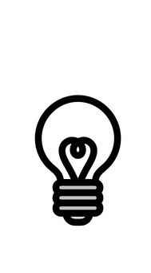
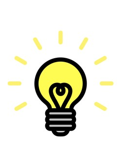

This study involves five tasks to test decision-making and prediction ability. The tasks may seem a little unclear, but this is by design. Please just do the best you can. For most participants, it will take ~10 minutes.
Privacy Notice: No personally identifiable information is being retained in this study.
Participant Information
Your Participant ID:
Task 1: Lights Task
Choose a switch to turn both lights on. One switch is more likely to work, but this can change.


Successes: 0
Task 2: Magician's Hats Task
Choose a hat to find the rabbit. Whether the arrow is helpful in finding the rabbit is for you to decide.
Rabbits Found: 0
Task 3: Stock Prediction Task
Watch the stock's movement over a period, then predict its later behavior day by day. Note that the average performance trendline (in red) will disappear after your first prediction.
Task 4: Orbital Motion Task
See the current positions and velocities of the three orbiting bodies on the left, then pick which of the three configurations on the right will be assumed next.
Task 5: Spring Damping Task
For each phase of the task that follows you will first have 5 seconds to observe the behavior of one oscillating (moving up and down) spring system with a blue block and then 5 seconds to observe the behavior of a spring system with a red block.
The height the blue block is dropped at, its weight, and the strength of its spring will never change, but all may change for the red block.
After looking at both, your task will be to choose between two new spring systems: both systems will show a purple block representing the blue and red blocks' weights added together, and both will be dropped a height equal to the blue block's drop height plus the red block's (for example, if the blue block is dropped from 1 meter and the red is dropped from 2 meters, the purple block will be dropped from 3 meters).
Your job will be to pick which of the systems has the same spring as the system with the blue block (hint: it will probably behave most like the blue one).